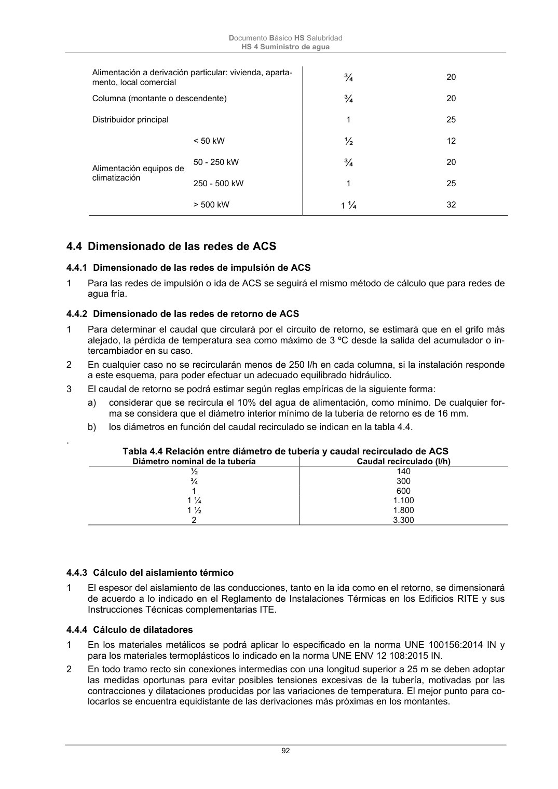

DB-HS Salubridad · edición 2022-06-14 · capa oficial
Documento DB-HS-oficial · SHA-256 del PDF 68df3caacc95f71aee2ec1ba7b2c65ae66155c21e3a8785521b8fdd4fd640d3b
Página física 92 de 184.
Copia fiel del PDF fuente · Fuente oficial
Ficha de la disposición en la fuente oficial
Formato: Texto de la página (Markdown)
Documento Básico HS Salubridad HS 4 Suministro de agua 92 Alimentación a derivación particular: vivienda, aparta- mento, local comercial ¾ 20 Columna (montante o descendente) ¾ 20 Distribuidor principal 1 25 Alimentación equipos de climatización < 50 kW ½ 12 50 - 250 kW ¾ 20 250 - 500 kW 1 25 > 500 kW 1 ¼ 32 4.4 Dimensionado de las redes de ACS 4.4.1 Dimensionado de las redes de impulsión de ACS 1 Para las redes de impulsión o ida de ACS se seguirá el mismo método de cálculo que para redes de agua fría. 4.4.2 Dimensionado de las redes de retorno de ACS 1 Para determinar el caudal que circulará por el circuito de retorno, se estimará que en el grifo más alejado, la pérdida de temperatura sea como máximo de 3 ºC desde la salida del acumulador o in- tercambiador en su caso. 2 En cualquier caso no se recircularán menos de 250 l/h en cada columna, si la instalación responde a este esquema, para poder efectuar un adecuado equilibrado hidráulico. 3 El caudal de retorno se podrá estimar según reglas empíricas de la siguiente forma: a) considerar que se recircula el 10% del agua de alimentación, como mínimo. De cualquier for- ma se considera que el diámetro interior mínimo de la tubería de retorno es de 16 mm. b) los diámetros en función del caudal recirculado se indican en la tabla 4.4. . Tabla 4.4 Relación entre diámetro de tubería y caudal recirculado de ACS Diámetro nominal de la tubería Caudal recirculado (l/h) ½ 140 ¾ 300 1 600 1 ¼ 1.100 1 ½ 1.800 2 3.300 4.4.3 Cálculo del aislamiento térmico 1 El espesor del aislamiento de las conducciones, tanto en la ida como en el retorno, se dimensionará de acuerdo a lo indicado en el Reglamento de Instalaciones Térmicas en los Edificios RITE y sus Instrucciones Técnicas complementarias ITE. 4.4.4 Cálculo de dilatadores 1 En los materiales metálicos se podrá aplicar lo especificado en la norma UNE 100156:2014 IN y para los materiales termoplásticos lo indicado en la norma UNE ENV 12 108:2015 IN. 2 En todo tramo recto sin conexiones intermedias con una longitud superior a 25 m se deben adoptar las medidas oportunas para evitar posibles tensiones excesivas de la tubería, motivadas por las contracciones y dilataciones producidas por las variaciones de temperatura. El mejor punto para co- locarlos se encuentra equidistante de las derivaciones más próximas en los montantes.

Datos candidatos: compruebe celdas y notas en el PDF.